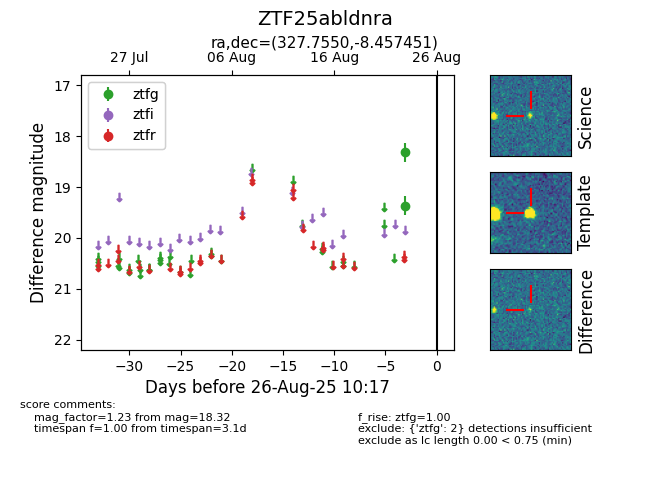

Target ZTF25abldnra at 2025-08-26 10:17, see:
FINK: fink-portal.org/ZTF25abldnra
Lasair: lasair-ztf.lsst.ac.uk/objects/ZTF25abldnra
ALeRCE: alerce.online/object/ZTF25abldnra
alt names
ZTF25abldnra (ztf,fink)
coordinates:
equatorial (ra, dec) = (327.7550,-8.45745)
galactic (l, b) = (47.9087,-43.50360)
photometry
last ztfg=18.32
2 ztfg detections
